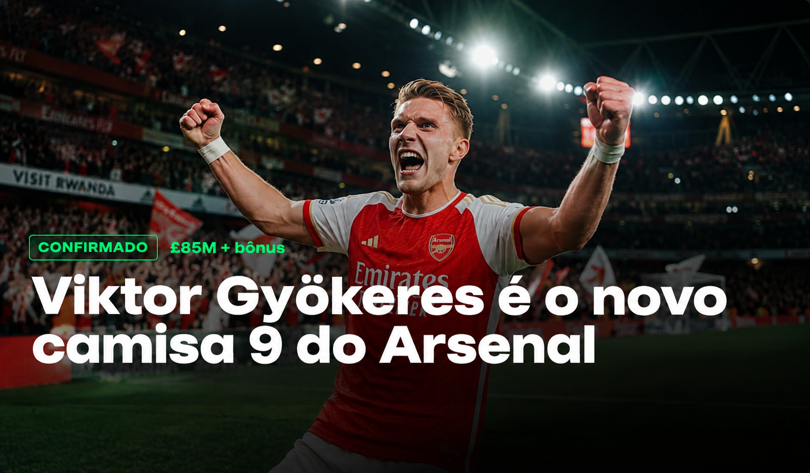
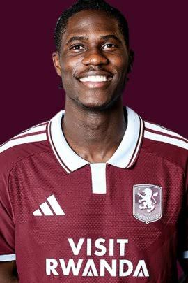

João Palinha
Zagueiro
Bayern de Munique → Fulham
€42.5M
O TransferLeague é o seu portal definitivo para acompanhar o mercado de transferências: confirmações oficiais, rumores com nível de confiabilidade e a tabela atualizada do campeonato inglês, tudo em um só lugar.

Após semanas de negociação, o clube confirma a contratação do atacante por valor recorde da temporada.
Zagueiro
Bayern de Munique → Fulham
€42.5M

Volante
Everton → Aston Villa
€50.0M
Atacante
Bologna → Manchester United
€36.5M
Atualmente no Newcastle
Destino: Chelsea
€110M
Confiabilidade: 85%
Atualmente no Newcastle
Destino: Arsenal
€90M
Confiabilidade: 60%
Atualmente no Athletic Club
Destino: Arsenal
€58M
Confiabilidade: 55%
Atualmente no Everton
Destino: Man United
€70M
Confiabilidade: 35%
| Pos | Clube | J | V | Pts |
|---|---|---|---|---|
| 1 | Arsenal | 22 | 16 | 52 |
| 2 | Manchester City | 22 | 15 | 49 |
| 3 | Liverpool | 22 | 14 | 46 |
Nossa equipe avalia o impacto das principais contratações da janela: qual clube fez o melhor negócio e quais reforços têm mais chance de virar titulares absolutos na próxima temporada.